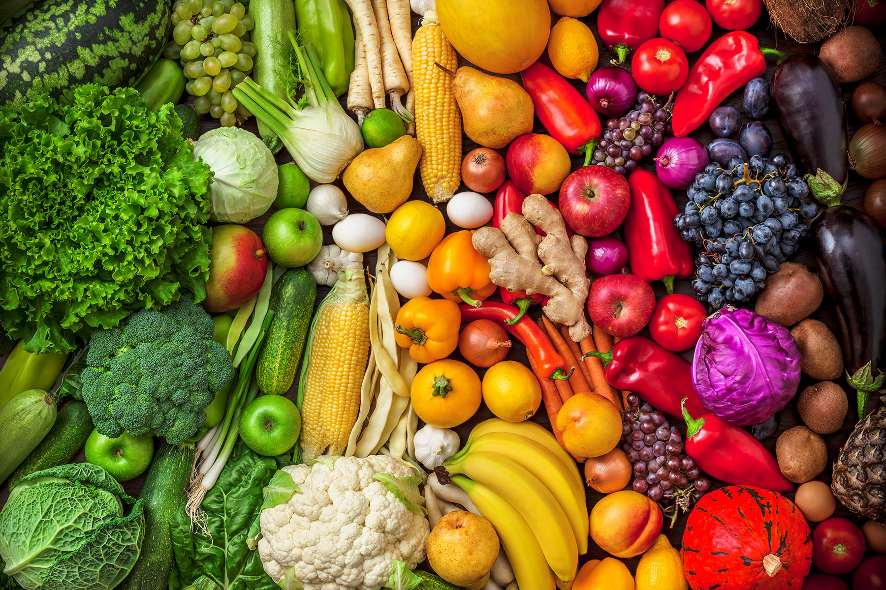
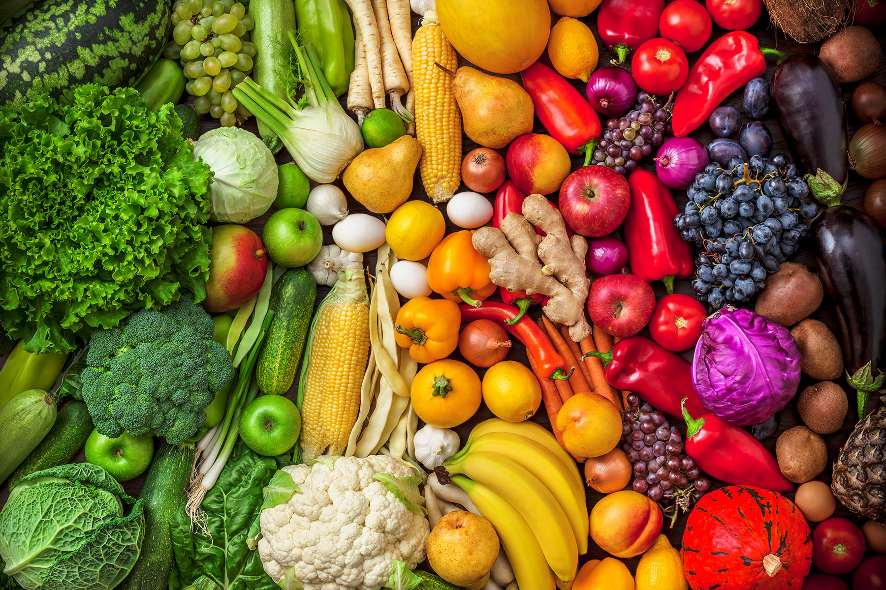
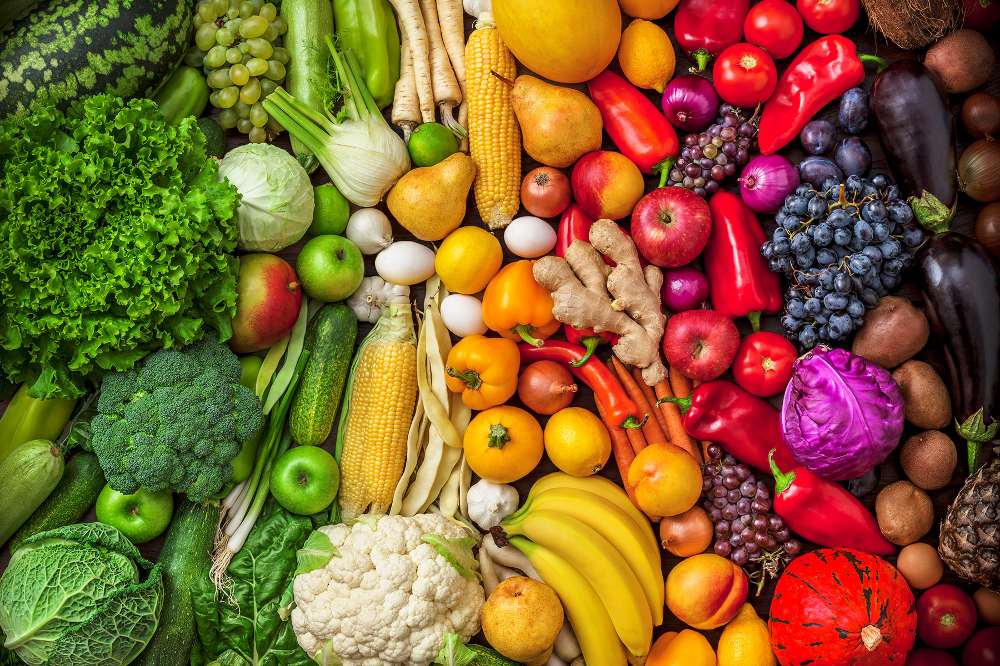
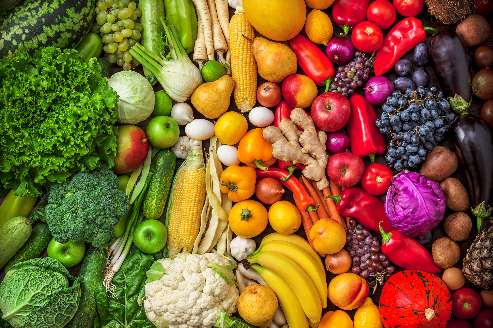

Om det är nånting som Arnold gillar så är det hans ciggarer. Cigarrer är ett interessant ämne då det är ett bra sätt att koppla av, gärna med en passande dryck, och spendera med en nära kamrat. Cigarrer är också något jag förknippar med Mafia filmer vilket är min favorit typ av rullar, t ex gudfadern.
(Klicka HÄR för att veta mer om Kubanska Cigarrer)Cigarr är ett rökverk tillverkat av fermenterad (genom jäsningsprocesser förädlad) och ofta lagrad tobak, rullad i ett eller flera tobaksblad. Fermentationen reducerar sockerhalten och bryter även ner proteiner. Detta gör att röken blir basisk, vilket i sin tur medför att nikotinet, som är en alkaloid, uppträder fritt i röken. Nikotinet kan därför upptas direkt i munnens slemhinnor, och röken behöver därför inte dras ner i lungorna för att få samma upptagning av nikotin.
Cigarrer av hög kvalitet är handrullade, men det finns även cigarrer som är maskintillverkade (samt några mellanting). En cigarr består av olika typer av tobaksblad, till skillnad från cigaretter, som består av skuren, ej fermenterad tobak innesluten i papper. Man kallar cigarrens tre byggstenar, dess konstruktion, för inlaga, omblad och täckblad – täckbladet är det yttersta och inlagan det innersta. Det ställs höga krav på täckblad för kvalitetscigarrer. De skall helst vara tunna och utan hål. För att få tunna och ljusa blad odlas ofta täckblad under vit väv, som utjämnar ljuset från solen och håller fuktigheten kvar i luften. Vuelta Abajo-distriktet på Kuba har nära perfekta odlingsbetingelser och anses därför av många som det bästa området i världen för produktion av cigarrtobak. Inlaga och omblad bildar en vickel.
En handgjord kvalitetscigarr är gjord uteslutande av hela tobaksblad, så kallade longfiller blad. Det är en ren naturprodukt och som sådan fri från kemiska tillsatser. Inlagans longfiller ger kanaler genom den färdiga cigarren, vilket ger ett behagligt lågt sugmotstånd. Tröskad tobak, s.k. shortfiller, som används i de flesta maskintillverkade cigarrer, ger ett högre sugmotstånd. Cigarrer kan sorteras i färger: claro = ljus, Colorado = medelfärg, maduro = mörk och oscuro = svart. Översta lagret, "spegeln", bör ha jämn färg. För att jämna ut färgen har vissa tillverkare matterat cigarrerna. Mattering innebär att man målar cigarren med fint tobaksmjöl.